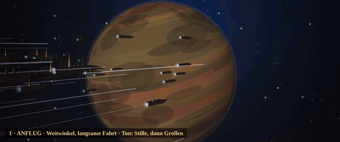
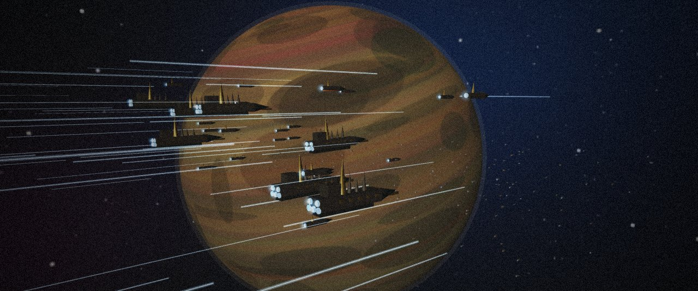
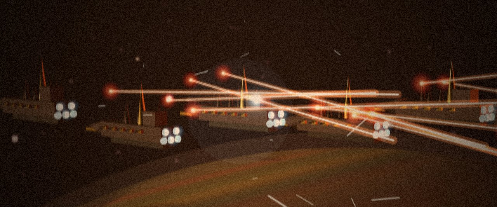
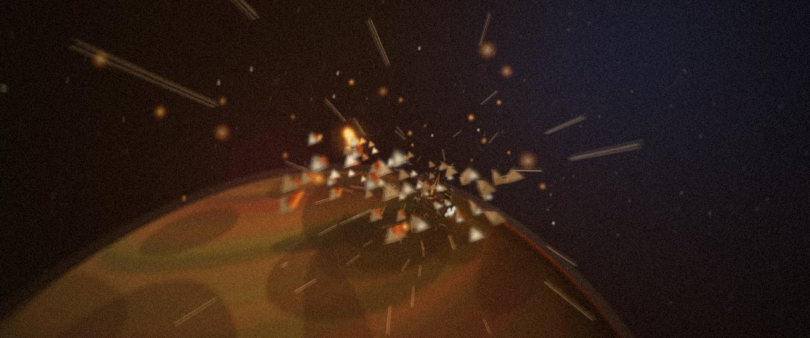
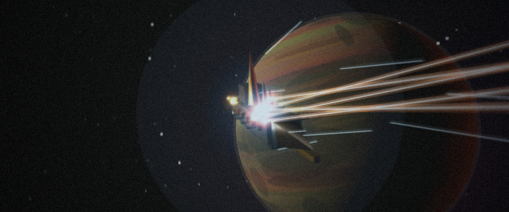
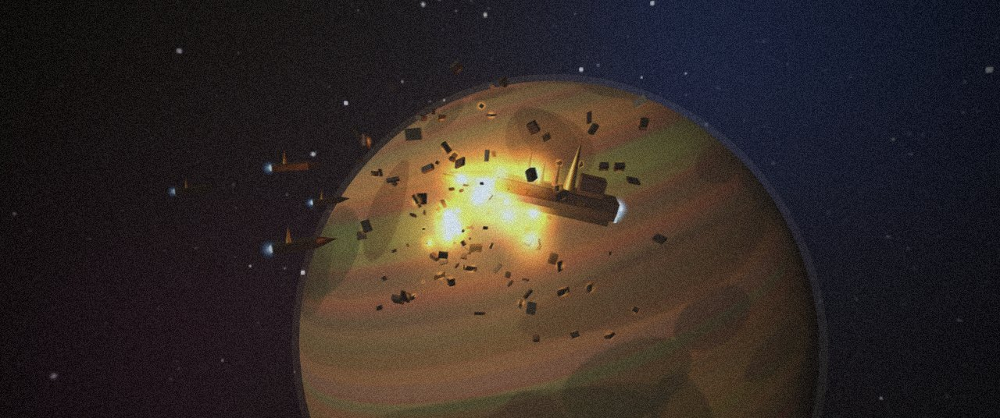
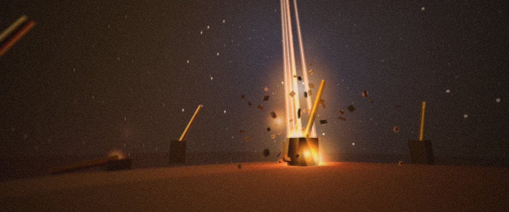
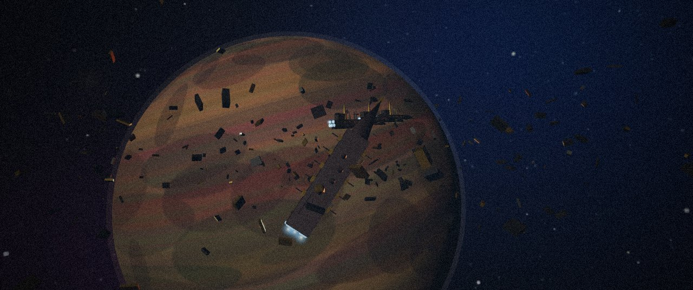

Studie [V] · Storyboard einer Schlacht-Aufzeichnung im Imperialen Herold · die Bilder sind Platzhalter aus einer einfachen 3D-Szene (Three.js), nicht aus Godot · Schiffsformen, Farben und Zahlen sind Beispiele · Kamera „dokumentarisch“ wie im Owner-Wunsch [E]: Reißzoom, Handkamera, harte Schnitte, gedämpfter Ton; Formationen im Geist von Homeworld [E]
Schlacht-Aufzeichnung · Gorgonis III

Ganze Schlacht als Film (32 s): alle acht Einstellungen des
Storyboards, je 3,5–4 s, und eine Abschlusskarte.
battle-replay.mp4 (1280 × 536, 24 Bilder/s) in voller
Qualität, das GIF verkleinert. In Godot liefe das mit 60 Bildern/s,
Bewegungsunschärfe und Ton; die echte Fassung wäre länger (etwa
2:40).
Die Bilder sind Platzhalter aus einer einfachen 3D-Szene, nicht aus
Godot. Die kurze Fassung mit drei Schnitten bleibt als
camera.gif.

1 · ANFLUGvor Runde 1 · 0:00–0:12
- Kamera
- Weitwinkel, langsame Fahrt auf die Flotte zu; leichtes Wackeln.
- Ton
- Stille, dann dumpfes Grollen beim Austritt aus dem Warp.
- Daten
- Teilnehmer und Einheiten zu Beginn von Runde 1 (Gruppen je Typ).

2 · ERSTE SALVERunde 1 · 0:12–0:30
- Kamera
- Tele, Reißzoom; Schärfe zieht nach; Handkamera.
- Ton
- Abschüsse gedämpft wie durch Rumpfmetall gehört.
- Daten
- Schüsse je Paar (Schütze → Ziel), wie viele der Schild schluckte.

3 · JÄGER IM FLAKFEUERRunde 2 · 0:30–0:52
- Kamera
- Mitflug hinter dem Schwarm, starkes Wackeln, Bewegungsunschärfe.
- Ton
- Laut und direkt (einziger „Innen“-Ton), Funkfetzen ohne Worte.
- Daten
- Abfangjäger und Sturmjäger, Verluste der Runde, Schnellfeuer-Ketten.

4 · SCHILD BRICHTRunde 3 · 0:52–1:15
- Kamera
- Halbnah, Gegenlicht, Lens-Flare beim Schildtreffer.
- Ton
- Hohes Sirren des Schilds, dann Stille.
- Daten
- Treffer auf Rumpf statt Schild; Einheit unter 70 % Rumpf (Explosionsgefahr).

5 · VERLUSTRunde 4 · 1:15–1:40
- Kamera
- Zeitlupe, ruhig; der einzige ruhige Schnitt der Schlacht.
- Ton
- Fast ganz stumm, dumpfer Nachhall, tiefer Ton.
- Daten
- Größter Einzelverlust der Runde (nach Kosten) wird gezeigt.

6 · VERTEIDIGUNG FÄLLTRunde 4 · 1:40–2:00
- Kamera
- Bodenkamera zwischen den Geschützen, Kamerastoß beim Einschlag.
- Ton
- Dumpfer Schlag durch den Boden, Rieseln, Alarmton.
- Daten
- Zerstörte Verteidigung je Typ und Runde; Schutzdom-Zustand.

7 · GEGENFEUERRunde 5 · 2:00–2:20
- Kamera
- Untersicht nach oben, Fahrt entlang der Geschützreihe.
- Ton
- Tiefe, gestaffelte Abschüsse.
- Daten
- Schüsse der Verteidigung; Treffer im Orbit als ferne Blitze.

8 · DANACHnach Runde 6 · 2:20–2:40
- Kamera
- Lange, ruhige Totale durch das Trümmerfeld.
- Ton
- Stille; nur Funkrauschen.
- Daten
- Ausgang, Trümmerfeld, Mond-Chance, Wiederaufbau der Verteidigung (70 %).
Wie Verteidigung dargestellt wird
Im Bild [V]
- Geschütze stehen am Boden unter dem Schutzdom; Raketenbatterien und Lichtlanzen als Gruppen, Massebeschleuniger, Ionenlanzen und Plasmabatterien einzeln sichtbar.
- Treffer: Feuer aus dem Orbit zieht senkrecht herunter; der Dom flackert, bekommt Risse und fällt, wenn der Kampfbericht ihn als zerstört führt.
- Zerstört: Explosion, Trümmer, ein brennender Stumpf bleibt stehen.
- Danach: Die Abschlusskarte nennt die wieder aufgebaute Verteidigung. Im Bild stehen die Stümpfe noch; das Replay zeigt den Kampf, nicht den Zustand danach.
Woher die Zahlen kommen
-
[E] heute: Verteidigung kämpft in
battleOfwie Schiffe; nach der Schlacht werden 70 % der zerstörten Verteidigung wieder aufgebaut, unter 50 Stück je Typ pro Stück ausgelost (REBUILD_SHARE,src/core/loot.ts). - [V]: Das Protokoll speichert, wie viele je Typ in welcher Runde fallen, und die Zahl des Wiederaufbaus aus derselben Pipeline. So passen Bild, Abschlusskarte und Kampfbericht immer zusammen.
- [V]: Die Animation zeigt 3 zerstörte, 2 wieder aufgebaut – Beispielzahlen.